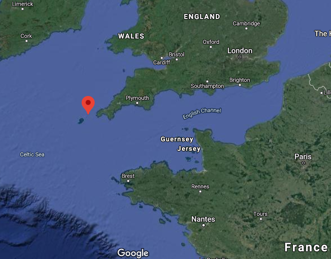
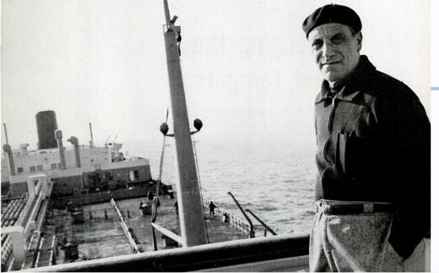
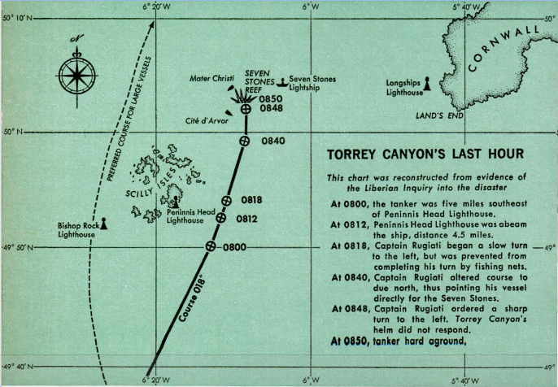
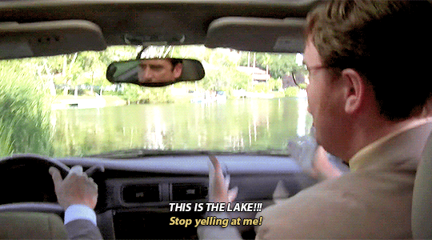

SS Torrey Canyon Oil Spill
Caleb Ziegler
Background
Oil tanker ran aground on reef off southwest coast of UK
Occured March 18, 1967
Worst oil spill at the time
Spilled 25-36 million gallons of crude oil
Setting
Origin: Kuwait
Destination: Milford Haven, Wales
Wreck occured near Scilly Isles on Seven Stones Reef off southwest coast of UK
Seven Stones Reef

Credit: Google
The Leader: Captain Rugiati

Credit: Popular Mechanics
The Leader: Captain Rugiati
Credit: The Office
Course of Events
0230: Capt Rugiati retires for evening
0600: First Officer wakes Capt Rugiati with status update
0630: First Officer spots Scilly Isles
0700: Capt Rugiati arrives on bridge
0800: First Officer relieved, new watch takes over
0838: Capt Rugiati realizes that new crew made mistake in calculating position
0850: SS Torrey Canyon runs aground in Seven Stones Reef
Last Hour

Credit: Popular Mechanics
Last Hour

Credit: The Office
The Person
Poor communicatior
Impulsive
Lack of trust in subordinates
Demanding
Tempermental
Rigid
Sleep deprived
Situation
Ship's position
Ocean current
Wind
Steering system
Three other vessels
Fishing Nets
Connectivity
Leading Down
Captain's intent not known
Did not empower subordinates
Ineffective team
Leading Beyond
No communication with other vessels
Parting Thoughts
Root cause: poor leadership
If plan generated in advance with thoughtful contingencies, stick to plan
If plan generated on short notice, be willing to adjust plan
Slowing down could have prevented oil spill
Google maps example
Sources
Cautionary Tales podcast episode "DANGER: Rocks Ahead!" by Tim Harford
Popular Mechanics article "What Really Caused the Torrey Canyon Disaster?" by Richard Petrow
BBC News article "Torrey Canyon Oil Spill: The day the sea turned black" by Bethan Bell & Mario Cacciottolo
Questions
?